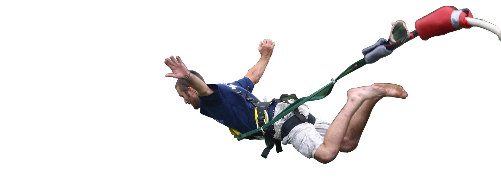

당신의 결과는?!
즐거움도 짧고 굵게'ESTP'

즉흥적인 성향이 강하고, 모험을 좋아하는 ESTP! ESTP는 액티비티를 좋아하지만 어떤 활동이든 짧고 굵게 즐기는 걸 선호하고, 반복되거나 긴 활동은 별로 좋아하지 않는 편이에요. 이런 ESTP에게 딱 맞는 여행 플랜은 바로 번지점프와 짚라인! 스릴도 있고, 짧은 시간 안에 끝나 지루하지도 않답니다 :)
나도 참여하기